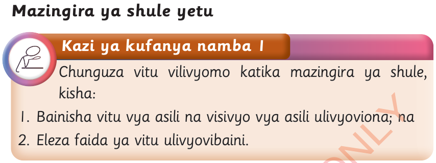

Mazingira ya shule yetu

Kazi ya kufanya namba 1
Chunguza vitu vilivyomo katika mazingira ya shule, kisha:
1. Bainisha vitu vya asili na visivyo vya asili ulivyoviona; na
2. Eleza faida ya vitu ulivyovibaini.
